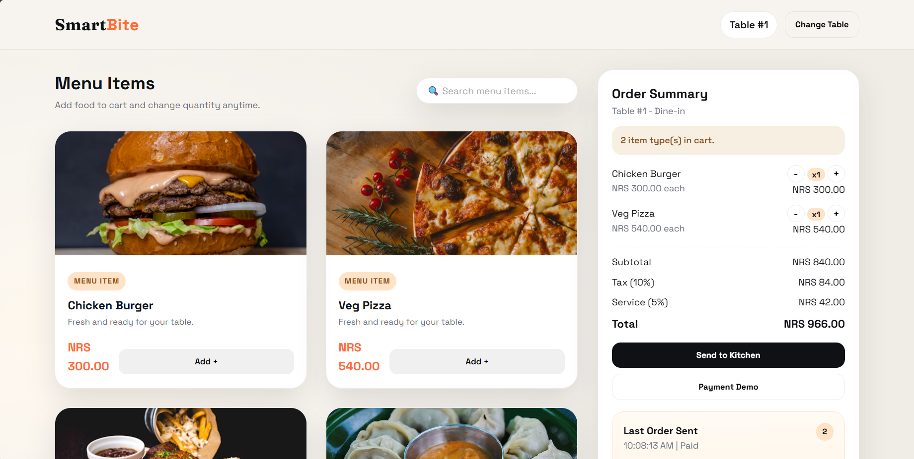

Frontend
- HTML, CSS, JavaScript
- React.js
- Responsive Design
- Tailwind CSS
Hetauda, Nepal · Open to internships & junior roles
Final-year BSc CSIT student who builds full-stack web applications end to end — from a Django REST API and PostgreSQL database to a responsive React front end, with real-time features and local payment integrations along the way.
I enjoy turning ideas into working products — pairing solid backend logic with interfaces that feel simple to use, and shipping things that actually run in production.
About
I'm a final-year Computer Science and Information Technology student at Tribhuvan University, and a frontend and full-stack developer who likes seeing a project all the way through — from database schema to the pixel a user actually taps.
Before development, I spent several years teaching Compulsory Mathematics, which is where most of my patience for breaking down complicated problems into clear steps came from. That same instinct shows up in how I approach debugging and structuring code today. I also use AI-assisted tools deliberately — for debugging, prototyping, and speeding up delivery — without letting them replace understanding the system.
Skills
Selected Projects

A full-stack local service marketplace connecting customers with verified professionals — with real-time booking updates, eSewa/Khalti payments, and a complete admin panel, deployed with Docker and Nginx.
Explore Project
A real-time restaurant ordering and billing system with live order tracking, cross-device table reservation sync, and an admin panel for menu and order management — deployed on Netlify.
Explore ProjectExperience
Planned lessons and explained concepts clearly to students at varying skill levels. Built strong communication, patience, and mentoring skills through consistent, long-term classroom engagement — skills that carry directly into how I explain and structure code today.
Education
Tribhuvan University — 8th Semester
Building a strong base in software fundamentals, programming, systems thinking, and modern full-stack application development.
Hetauda School of Management and Social Sciences
Completed higher secondary education with a focus on science and mathematics.
Resume
I'm available for internships, graduate roles, frontend opportunities, full-stack work, remote projects, and freelance collaborations.
Certifications
90 hours of intensive internship training in real-world development practices.
Backend logic, database integration, and MVC architecture fundamentals.
Prompt engineering and applied use of 11+ AI tools, including ChatGPT, Gemini, and Perplexity.
GitHub
Source code for both featured projects — SkillConnect Nepal and SmartBite — is public on my profile, including commit history and setup instructions.
Contact
I'm interested in internships, graduate roles, frontend work, full-stack opportunities, remote projects, and freelance collaborations.